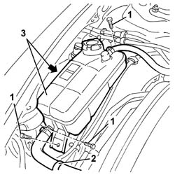
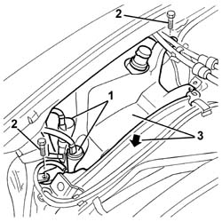

5050A10 windscreen washer fluid reservoir (in engine bay) - r+r
- Path
- Procedures > 50 AUXILIARY UNITS > 5050 SCREEN WASHERS AND HEADLAMP WASH/WIPE > 5050A windscreen and headlamp washer reservoir > 5050A10 windscreen washer fluid reservoir (in engine bay) - r+r
- Kind
- repair procedure (removal / refitting; the operation number is the code)
- Applies to
- all engines; all production periods
- Interactive page
- https://sloeber94.github.io/elrnDB-a147/en/#/3025457
Applies to: engines: 1.9 JTD 16V; all production periods
 Removing
Removing
 Refitting
RefittingApplies to: engines: 1.9 JTD 16V; all production periods
7055B42 Additional FRONT WHEEL ARCH (one), left or right - R.R. (right)
Lower the vehicle and open the bonnet lid.
1. Undo the bolts fixing the coolant reservoir.
2. Disconnect the pipe retaining band.
3. Move the coolant reservoir.

Applies to: engines: 1.9 JTD 16V; all production periods
Position a suitable container for collecting the windscreen washer reservoir fluid.
1. Release the electric pumps from the reservoir and drain the fluid into the container.
2. Undo the bolts fixing the windscreen washer reservoir.
3. Raise the vehicle and extract the windscreen washer reservoir from the wheel arch.

Applies to: all engines; all production periods
Refitting
RemovingCheck that the windscreen washer reservoir is not damaged.
Place the windscreen washer reservoir in position and secure it using the bolts.
Fit the electric pumps on the reservoir.
Position the coolant reservoir and secure it using the bolts.
Refill the windscreen washer fluid reservoir.
Close the bonnet lid and check the operation of the windscreen and headlamp washer.
7055B42 Additional FRONT WHEEL ARCH (one), left or right - R.R. (right)
Applies to: engines: 1.9 JTD 16V; all production periods
Topics linked from this page (3)
- 7025A12 Engine front sound insulation COVER - R.R.
- 7025A14 Bonnet LID - R.R.
- 7055B42 Additional FRONT WHEEL ARCH (one), left or right - R.R.